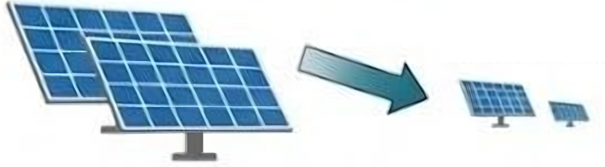
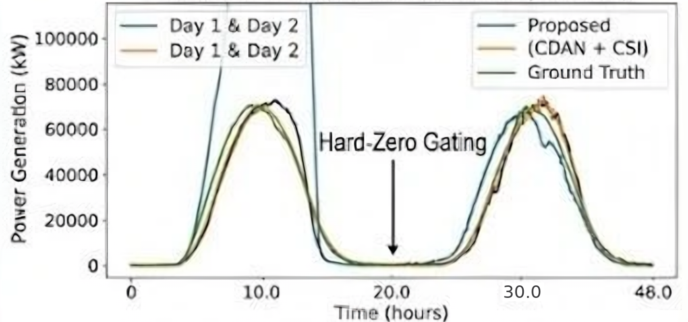
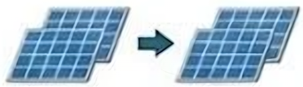

1. PROBLEM STATEMENT & MOTIVATION
Cold-start PV data scarcity and magnitude overfitting during transfer between plants of unequal capacity

14 MW Source 1.4 MW TargetMagnitude overfitting under unequal capacities
Objectives
- Investigate zero-target-label unsupervised transfer
- Decouple scale via per-unit normalization
- Eliminate deterministic diurnal cycles with the Clear-Sky Index
- Align dynamics through a CDAN
2. KEY CONTRIBUTIONS & DATA
1) Failure Mode Characterization
- Identifies magnitude overfitting as the cause of transfer collapse and motivates magnitude normalization
2) Physics-Guided Domain Alignment
- Per-unit scaling and the Clear-Sky Index remove capacity and diurnal effects before CDAN alignment
3) Transfer Boundary Delineation
India
Australia
(mature source)
(cross-continental target with
discordant hemispheric seasonality)
- Tests intra-regional and cross-continental transfer
3. PROPOSED METHODOLOGY & ARCHITECTURE
Fig. 1. Proposed CDAN + LSTM + CSI architecture
4. EXPERIMENTAL BENCHMARK & TRACKING
| Task 1 India | Task 2 Australia | Task 3 Australia | |
|---|---|---|---|
| A1: Source-only LSTM | 0.8325 | – | – |
| A3: CDAN+LSTM | 0.8329 | – | – |
| A4: Transformer | – | 0.5428 | 0.5428 |
| Proposed (CDAN+LSTM+CSI) | 0.8325 | 0.5428 | – |
Uncalibrated Baseline: Ŷ > 10,000 kW (Off-Scale)

Fig. 2. 48-hour tracking curve
5. DISCUSSION & FUTURE WORK
Key Insight
- Adversarial alignment is highly effective intra-regionally, but cross-continental transfer (India to Australia) encounters negative transfer (R² < 0) due to seasonal phase misalignment.
- Unadapted Transformers are resilient and retain positive skill.

Intra-Regional CDAN
(Aligned Representation)
Cross-Hemisphere CDAN
(Negative Transfer)
Conclusion
- Resolves the uncalibrated magnitude collapse with per-unit scaling and nocturnal zero-masking.
- Outlines adaptation boundaries: intra-regional alignment helps, cross-continental transfer does not.
- Establishes a zero-label transfer benchmark.
- Future work with post-commissioning fine-tuning.
- Acknowledgment: GenAI/LLM tools helped in preparing this poster.